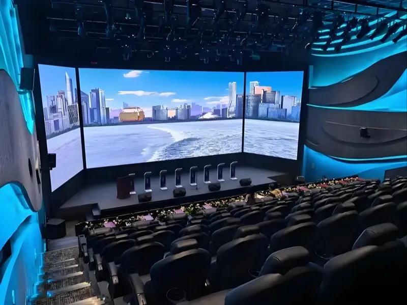
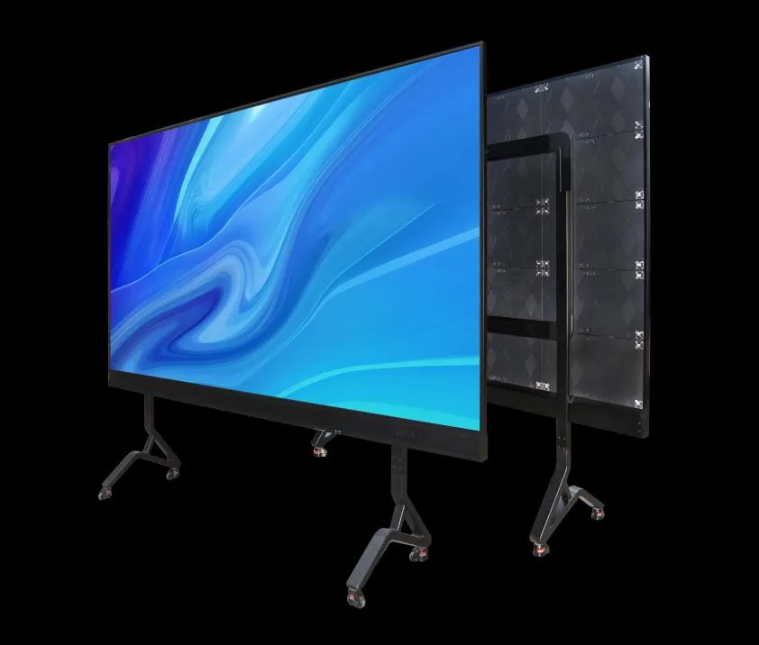

An LED backdrop puts the background in the camera shot, so the presenter and the wall are lit and framed together. Broadcast studio, Yle News Finland (Asia Vision case library).
LED Video Backdrops for Live Streaming and E-Commerce Studios: A Buyer's Guide
2026-11-16Asia VisionBuyer's Guide
What is an LED backdrop for a live streaming studio? It is a fine-pitch indoor LED video wall placed behind the presenter, so the background is a real screen in the camera shot rather than a printed set, a TV or a green screen that has to be keyed out. The wall can show a brand loop, a product scene, a live poll or a different set for every show, and the camera sees it with correct perspective and reflections because it is physically there.
This guide is for studio owners, e-commerce live-room operators, agencies and AV integrators who are building or upgrading a streaming room. It is deliberately different from the larger studio guides. The broadcast studio LED wall guide covers full television sets, and the XR wall specification covers virtual production volumes. A streaming room is usually a few metres deep, one or two presenters, one to three cameras, a changing product or topic and a limited budget and power supply. The decisions that matter are pixel pitch for the camera distance, how the wall behaves on camera, the content format, and what a small room can carry in heat and power.
Why Use an LED Wall Instead of a Green Screen or a TV
No keying. The background is already in the picture. There is no green spill on hair and clothes and no edge to clean up.
Real lighting and reflections. A bright, changing background lights the room in a way a flat colour cannot, and glass, metal and glossy products reflect something real.
Fast set changes. A new background is a new file or a switched input, not a rebuilt set.
Live content on the wall. Product pages, comments, price cards and countdowns can sit behind the presenter and appear in the shot.
A larger, more even surface than a TV wall. Individual panels have bezels; a fine-pitch LED wall has a continuous image.
The trade-offs are cost, power, heat and the fact that the wall is a light source that can flicker or show moiré on camera if it is chosen carelessly.

A multi-panel LED backdrop on a launch stage. Curved wings frame the presenter and give the camera depth. Tech product launch backdrop, Shenzhen (Asia Vision case library).
Choosing Pixel Pitch for the Camera
In a live room, two distances matter: how close a person can stand to the wall, and how close the camera can focus on the wall. Pixel pitch is set by the nearer of the two.
Presenter and camera in front, wall behind and out of focus. This is the usual case. With a shallow depth of field the wall is soft, which hides pixel structure. A mid fine pitch is often enough.
Wall in sharp focus. A close-up of a product held against the wall, a presenter leaning on it, or a wide shot with a deep depth of field shows the pixel grid and makes moiré more likely. Choose a finer pitch.
Audience or crew near the wall. If people walk past or work near the wall, set the pitch by their closest distance as well.
Public supplier guides give starting points. Arclumin suggests about P1.53 for rooms where the closest viewing distance is 1–2.5 m and about P1.86 at 2.5–5 m, and LEDVDI suggests P1.8–P2.5 for 10–20 m² rooms. These are competitor suggestions, not Asia Vision guidance, and they are rules of thumb. The only reliable test is your camera, your lens, your aperture and your content. The viewing distance guide and the pixel pitch guide give the general method, and the LED display calculator turns wall size and pitch into resolution.
The front face of a CV-PRO COB module. A sealed, matte COB face is easy to wipe clean and does not show individual lamp beads (Asia Vision product photo).
How the Wall Behaves on Camera
Three effects decide whether an LED backdrop looks professional or distracting on a stream.
Flicker and banding. Cameras sample the wall at their own shutter speed. If the refresh rate and the shutter do not suit each other, dark bands or flicker appear. Asia Vision's specification sheets list ≥3840 Hz refresh on M-PRO, CV-PRO and S Series indoor, and ≥7680 Hz on the COB Z, COB RH-PRO and E-PRO indoor rental sheets. Higher refresh helps, but you still need to test your shutter and frame rate. See the camera flicker guide.
Moiré. A repeating pattern in the wall interacting with the camera sensor grid creates rippling colour patterns. It is worst when the wall is sharp and the pitch is close to the sensor's sampling, and it often disappears with a slight change of distance, focus or angle. A surface treatment and a slight defocus help.
Brightness and colour balance. Wall brightness must sit with the presenter's key light. A wall running near its maximum washes out skin tones and clips highlights. Studio use needs dimming far below the peak figures on the data sheet.
The practical consequence is simple: audition the wall with your actual camera before buying. Ask the supplier to show a sample panel, or a short run of panels, at your shutter speed and distance.
Content, Resolution and Format
An LED wall is not a TV. Its native resolution is the number of pixels across and down, which depends on the pitch and the wall size. Design backgrounds at native resolution, use frame rates that match your cameras (50 or 60 fps), and keep loops simple.
Aspect ratio. M-PRO and CV-PRO are built on a 16:9 cabinet, so a 16:9 background fills the wall without cropping. If your stream is vertical, plan the wall layout and content for that format before ordering.
Avoid strobing and hard patterns. Fast flashes distract from the presenter and can cause visible artefacts on camera.
Keep text and logos away from the cabinet joints. Seams show most on flat colour fields; see the seam guide.
Latency. If the wall shows a live feed that the presenter reacts to, check the delay; see the latency guide.
The Room: Power, Heat, Noise and Mounting
Small rooms magnify every physical constraint.
Power and heat. Everything an LED wall draws becomes heat in the room. The M-PRO sheet lists an average of up to 280 W/m² and a peak of up to 560 W/m². A 6 m² M-PRO wall at the average would dissipate up to roughly 1.7 kW into the room, plus lights and cameras. Plan air-conditioning and a dedicated circuit. See the cooling guide and the energy consumption guide.
Noise. Fans in a wall behind a microphone are a problem. See the acoustic noise guide.
Distance and reflections. Keep the presenter far enough from the wall to avoid colour spill and reflections, and aim lights at the talent rather than the screen.
Mounting. Wall-mounted, ground-supported or hung. Front-service designs matter in a studio where there is no room behind the wall. The structure and mounting guide covers the choices.
Rear of an M-PRO 600 × 337.5 mm die-cast cabinet. A slim 16:9 cabinet suits wall-mounted studio backdrops where depth is limited (Asia Vision product photo).
P0.78 to P1.56, ≥7680 Hz, dual power, dual receiver, dual signal
A premium or mission-critical studio
Likely more than a small room needs

A COB all-in-one unit on a mobile stand, integrating display and control for small rooms (Asia Vision product photo).
What Asia Vision Publishes, and What It Does Not
The product pages and specification sheets publish the pitch options, refresh rates, cabinet sizes, brightness figures, power consumption and the design features above. The case library lists a broadcast studio rebrand for Yle News Finland and a product-launch backdrop run at 7680 Hz refresh for live-stream broadcast.
They do not publish camera test results, moiré performance data, studio presets, streaming-platform integrations or a streaming-studio reference customer, and this guide does not claim any. Ask for a sample demonstration on your camera if the wall will sit in the shot.
What to Put in the RFQ
Suggested RFQ wording: "The wall will be used as an on-camera backdrop in a studio of [size] m², with cameras at [distance] and shutter speed [value] at [50 / 60] fps. The bidder shall state the proposed series, pixel pitch, refresh rate and cabinet size; the average and peak power in watts for the proposed wall size; and the fan noise at one metre. The bidder shall provide a sample demonstration on the buyer's camera and shall confirm the wall has no visible flicker, banding or moiré at the specified settings before acceptance."
Add the room dimensions, the camera and lens model, the content resolution and frame rate, and whether the wall needs to be moved. Product pages publish a 3-year warranty and 18-day standard factory dispatch; leave time for an on-camera test before the launch date.
FAQ
Q: What pixel pitch do I need for a live streaming studio LED wall?
A: It depends on how close the camera focuses on the wall and how close people stand to it. Supplier guides commonly suggest around P1.5 to P2.5 for streaming rooms, with a finer pitch where the wall is close or in sharp focus. Test your own camera and lens before buying.
Q: Will an LED backdrop flicker on my stream?
A: It can if the refresh rate and the camera shutter do not suit each other. A high refresh rate helps, and the Asia Vision indoor series list refresh rates of at least 3840 Hz or 7680 Hz depending on the series, but you should test your shutter speed and frame rate on a sample.
Q: Why do I see moiré patterns on camera?
A: Moiré appears when the repeating pixel grid of the wall interacts with the sensor's pixel grid, especially when the wall is in sharp focus. Changing distance, focus or angle, using a finer pitch, or a matte surface usually reduces it.
Q: How much heat does a small LED backdrop add to a room?
A: Nearly all the power an LED wall draws becomes heat. As an example, the M-PRO specification sheet lists an average of up to 280 W/m², so a 6 m² wall can dissipate up to roughly 1.7 kW. Plan cooling and power accordingly.
Q: Which Asia Vision series is best for a small streaming room?
A: For a fixed wall, M-PRO and COB CV-PRO are the indoor fine-pitch options, with CV-PRO suited to close or sharp-focus walls. The COB All-In-One suits a small room that wants a single unit. E-PRO suits a studio that moves. Send your room size and camera distance for a specific recommendation.
Sources
Asia Vision product pages and specification sheets (/downloads/specs/): M-PRO SMD v2.0, CV-PRO Flip Chip COB v1.0, COB All-In-One V5.1, E-PRO indoor rental sheets, S Indoor v2.0, COB Z v1.0: pixel pitch, refresh frequency, cabinet size and power consumption.
Asia Vision case library: Yle News Finland broadcast studio rebrand; tech product launch backdrop (P2.6 rental, 7680 Hz refresh for live-stream broadcast).
Public supplier guides read for the research notes on streaming-room pixel pitch and camera behaviour (Arclumin, LEDVDI, LED Screen Factory, LED Market USA). They are cited as competitor suggestions and are not sources for any Asia Vision product claim.
Planning an LED backdrop for a streaming or e-commerce studio? Send the room size, the camera distance and the camera model, and we will reply with the cabinet data and a sample demonstration plan. Start a project enquiry.